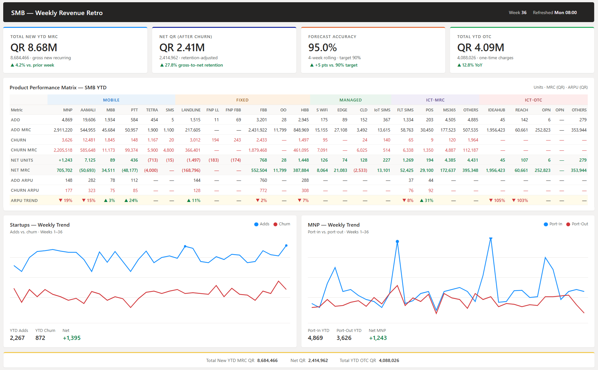

Lead-to-Cash Optimization
The SMB Sales Operation at Ooredoo Qatar is served by 100+ indirect channel partner agents, multiple retail
outlets
across the country, and several digital channels.
Led a full-stack transformation of the SMB sales and service operation at Ooredoo Qatar — deploying five concurrent initiatives spanning process automation, sales enablement, data infrastructure, and customer experience. The work drove measurable gains across revenue, order cycle time, customer satisfaction, and executive visibility.
+18
NPS Point Improvement
84%
CSAT Score
9→3
Days Order-to-Activation
+12%
Revenue per Account
1
Customer Engagement Enablement
Sales staff lacked effective tools to engage walk-in customers in shops, resulting in missed revenue
opportunities and a flat in-store experience.
Designed an interactive product and services catalog tailored for both shop and field environments.
Deployed it on interactive screens across all retail locations for self-serve customer browsing, and
equipped field sales representatives with the same catalog for guided conversations. Integrated promotional
messaging into the queue management system so customers received relevant content while waiting.

2
Unified SFA
Sales materials were fragmented across personal folders and shared drives, making it difficult to ensure
teams were working from current, accurate information.
Sourced and deployed a centralized Content Management platform as the single source of truth for all sales
collateral — including customer presentations, product specs, pricing, promotions, training materials, and
order forms. Drove adoption across the full sales team through structured onboarding and training.
Established a governance process with Base Management and Product Managers to keep content continuously
reviewed and up to date. Equipped every field sales representative with a connected tablet, enabling
real-time access to collateral, customer data, and order processing in the field.

4

Mobile CRM & Field Sales Empowerment
The field sales team had no mobile access to the CRM or SFA platform, limiting their ability to manage
leads, engage customers meaningfully, or capture market intelligence in the field.
Enabled and customized the mobile module of the company's Oracle SFA platform, giving the team full lead
management capability on the go. Integrated it with the CRM to surface customer contacts, active services, and
account history — enabling informed conversations and on-the-spot appointment scheduling. Extended the module
to allow reps to feed market intelligence back into the CRM, including competitor services, new contacts, and
updated account details.
5
Revenue Intelligence & Executive Reporting
Fragmented data sources and manual reporting processes created blind spots in sales performance, limited
accountability, and left leadership without a reliable view of the business.
Engineered automated data pipelines with CRM and Billing developers, consolidating sales performance data by
agent, zone, and product alongside churn and number portability metrics. Built an ETL layer using SQL and
Power Query, then developed an interactive reporting suite in Excel and Power BI to surface trends and
performance stories clearly. Designed a monthly Revenue Intelligence Pack for C-suite consumption,
consolidating KPIs across revenue, churn, NPS, workforce utilization, and pipeline into a single, visually
consistent deck. Eliminated 40 hours per month of manual report preparation and established a single source
of truth for strategic decision-making.

